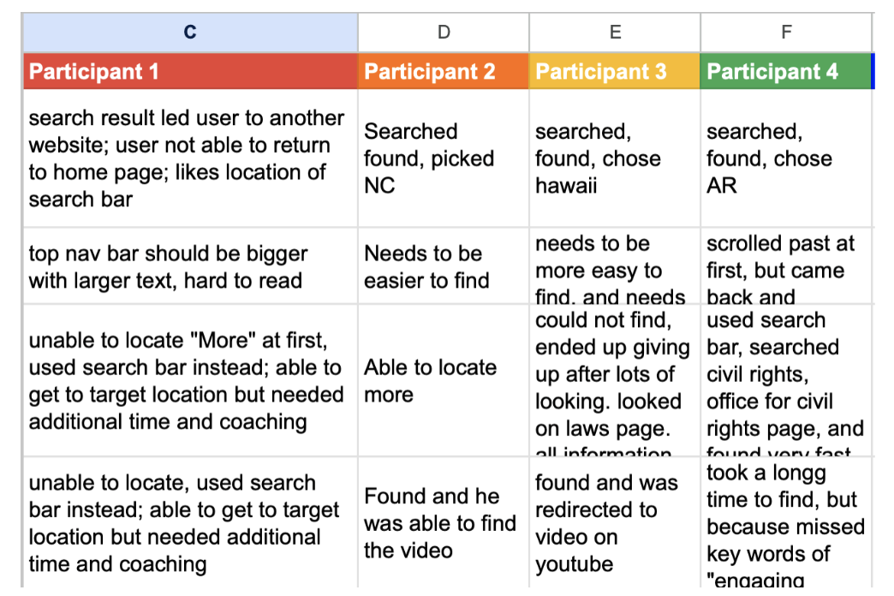

Problem Statement
U.S Department of Education website has a lot of information that is useful, but also unuseful as well as bad navigation and it being not user friendly. There needs to be an implementation of good information placement and user friendly design.

Original Website
It has an outdate homepage style with a lot of information scattered all over the place.

More Problems
I highlighted many problems throught the original website. Here are the manin ones:
- There is no sub navigation when hovering the main navigation
- Primary navigation should all have an indication that the user is on the specific page.
- There needs need be separtion of information because it causes users to be overwhelmed.
Notes From Usability Website Navigation Tests 
Government Website Redesign

Desktop Prototype
To fix an outdated homepage design and organize complex information.
Goal
The goal of the project was to create an easy to use navigation bar and easily pay student loans.
My Role & Responsibilities
In charge of designing the whole layout and navigation bar.
-Organizing important information in the navigation bar
-Collecting Impactful Images
-Making sure desktop translates just as well to mobile size
Timeline
Sept 18- Oct 17
Final Product

Problem Solved
It looks like a modern website with clean and hi-res images. Information is all in order and easy to locate, also most important of all it is now user friendly.
Research
Started off with a proto person, in order to get ideas of what kind of person would use this type of website.

Created a user path to test out the flow.

User tested a prospective college student.

User tested a former college student.
Over all results of usability tests.